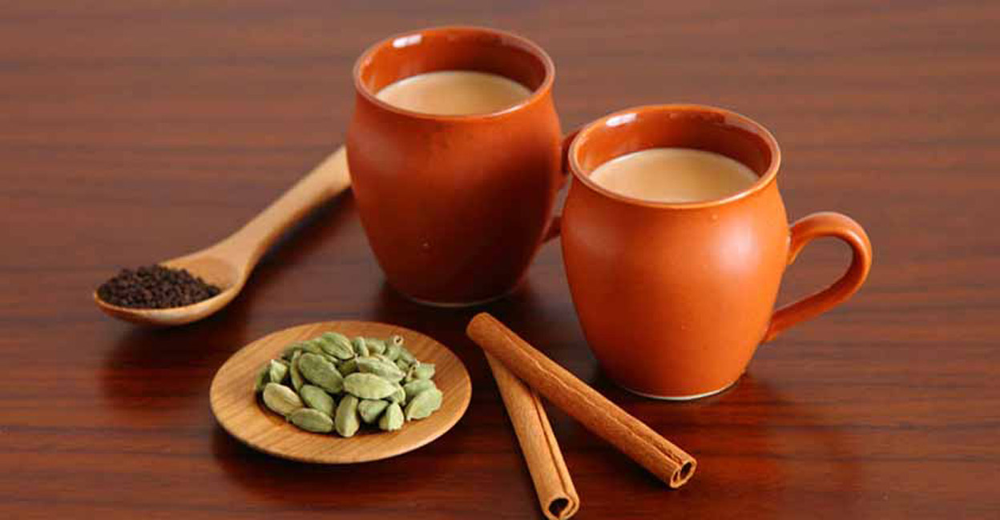

How to make a Tea

Tea is an aromatic beverage prepared by pouring hot or boiling water over cured or fresh leaves of Camellia
sinensis,
an evergreen shrub native to China, India and other East Asian countries.
Tea is also rarely made from the leaves of Camellia taliensis.
After water, it is the most widely consumed drink in the world
Ingrident
- Tea Bag
- Water
- Milk-Dairy/Plant based (optional)
- Sugar/Honey (optional)
Prepration
- Treat your water kindly:
Run the tap a little so the water's nicely aerated, and only boil it once to keep the oxygen level up.
Oxygen in water helps flavour!
- Add tea and water:
Pop a tea bag into your mug, pour over the hot water and stir briefly.
- Wait patiently:
Tea needs time to unlock all its flavour, so give it 4-5 minutes to do its thing. This is a perfect time
to munch a sneaky biscuit or daydream about holidays.
- Give it a squeeze:
Before removing the tea bag, gently squidge it against the side of the mug. Just the once, mind – if you
really mash it, it'll taste bitter.
- Customise your brew:
We like a splash of semi-skimmed or whole milk, but your brew is unique to you – so add milk, sugar,
honey, lemon or nothing at all.
-
Most importantly, enjoy!